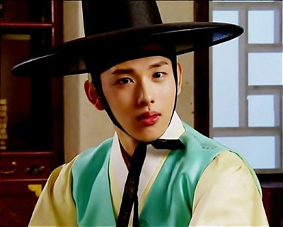

드라마
해를 품은 달

임시완은 해를 품은 달(이하 해품달) 에서 여주인공 연우의 오빠인 허염의 어린시절을 연기했다. 첫 데뷔작을 아역으로 시작한 셈인데, 당시 임시완의 나이는 한국나이로 25살이었다. 해품달에서 허염으로 첫등장하자마자 센세이션을 일으켜 단숨에 시청자들을 허염앓이 하게 만들었다.
적도의 남자
이장일 아역으로 출연했다. 이장일은 출세를 위해 아버지의 죄를 숨기고, 결국은 각목으로 친구를 후려쳐 바다에 수장까지 하는 거의 소시오패스에 가까운 인물이다. 살인자를 연기해야 하는 부담감에 처음에는 캐스팅을 거절하려 했으나, 감독과 소속사 사장이 자신감을 심어주며 밀어붙여 연기를 콜했다.
스탠바이
실제 이름과 똑같은 임시완역으로 출연했으며, 류진행 역할의 류진과 피를 나누지는 않았지만 누구보다 서로를 챙겨주고 사랑하는 부자관계로 출연했다.
연애를 기대해

드라마 내용 자체는 남친 여친이 있는 남녀 둘이 폰 메시지로 연락을 주고 받다가 사랑하게 되는 이상한 드라마지만 임시완이 찌질남 연기를 했다는 점에서 볼 가치가 있는 드라마다.
트라이앵글
이범수, 김재중과 함께 3형제의 막내 역할로 캐스팅되었다. 이장일 이후로 오랜만에 악역에 가까운 역할이었으나, 대본이 늦게 나오고 배우들은 몰입할 시간은 커녕 잠잘 시간도 없이 촬영하는 날들의 연속이었다고한다. 이 드라마를 보고 미생 감독이 임시완을 장그래로 캐스팅하려고 마음먹었다고 한다.
미생
미생이 방송되기 전에 열린 미생의 밤 행사에서 감독이 임시완 캐스팅하기 힘들었다고 투정하듯 이야기했다. 이에 임시완이 소속사의 밀당이었을거라고 재치있게 답했는데, 실제로는 소속사에서 임시완에게 캐스팅 제의가 들어왔다는 걸 알리지도 않고 미리 거절했다는 것. 그 후 임시완이 캐스팅제의를 알았고, 본인이 강하게 출연하겠다고 어필해서 캐스팅이 성사되었다고 한다.
왕은 사랑한다
임시완은 극중 백작약 같은 매혹의 미소년, 아름다움과 선량함 이면에 뒤틀린 정복욕을 감춘 고려의 왕 왕원을 연기했다. 뱀같은 지혜, 파격적인 기질과 종잡을 수 없는 언변으로 많은 이들을 자신의 사람으로 끌어들이는 탁월한 능력을 지닌 캐릭터를 연기했다.